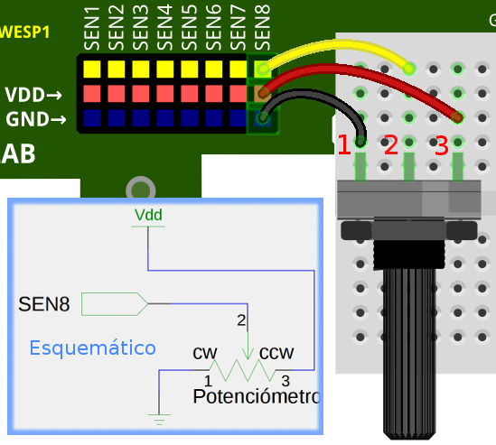
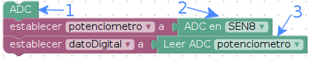

3. ENTRADAS ANÁLOGAS¶
La información análoga tiene un comportamiento continuo, cuando se discretiza la información (digitalizar) la resolución con la que se logra digitalización dependerá de la capacidad de observación del dispositivo.
media_lab tiene la capacidad de digitalizar el nivel de tensión por 8 canales diferentes (ver conexión física). Se reitera que la conversión lograda es de tensión (voltaje). La resolución que se pude lograr con media_lab es de 12 bits. Los umbrales de tensión que pude observar media_lab son: 0 a 3.3 Voltios. Si se desea medir niveles de tensión diferentes se debe usar un sistema de adaptación.
Ejemplo: Si al conectar a una de las entradas un cable que contiene una tensión variable de un potenciómetro como en la imagen de conexión física y la lectura obtenida fue 2800, la interpretación se hace como sigue:
Resolución = 12 bits -> 2^12 = 4096 posibilidades -> puede medir desde 0 a 4095
Tensión = 2800*3.3 Voltios / 4095 = 2.256 Voltios.
3.1. Conexión física¶

3.2. Programa en blockly¶

3.2.1. Explicación de programa¶
En la imagen se numeran los bloques para luego ser explicados como sigue:
- El bloque ADC activa la librería que permite crear el conversor análogo digital.
- Como en la construcción de objetos digitales, en los objetos análogos se requiere hacer uso de variables para así hacer uso de sus propiedades. Éste bloque construye objetos ADC con capacidad de leer en el pin con el nombre correspondiente (en éste caso SEN8, ver conexión física).
- La lectura análoga puede ser almacenada en otra variable para su respectivo uso, éste bloque extrae la lectura análoga, no olvidar que es de tipo entero, con una resolución ya definida.